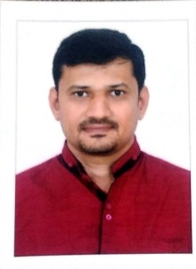
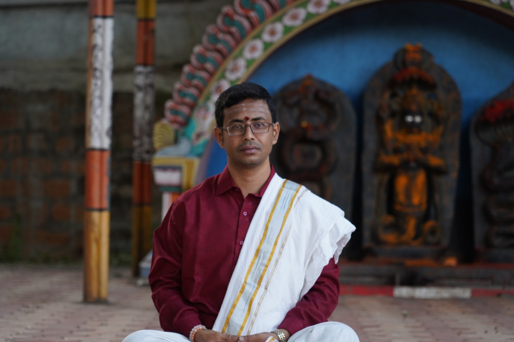

Meet Our Astrologers

Shri. Surya Prasad C A
Shri. Surya Prasad C A is a seasoned astrologer with over two decades of unwavering dedication to the profound sciences of Vedic Astrology, Jaimini Astrology, and Vastu Shastra.
With a deep-rooted passion for decoding the cosmic symphony, he has honed his skills over the years to offer unparalleled insights into the intricate tapestry of your life's journey. Through the ancient wisdom of Vedic Astrology, he unveils the secrets of your birth chart, providing clarity and guidance on every aspect of your existence – from career and relationships to health and spirituality.
Additionally, his proficiency in Vastu Shastra enables him to harmonize your living spaces with cosmic energies, creating environments that foster abundance, prosperity, and well-being. By aligning your surroundings with celestial rhythms, he empowers you to manifest your deepest desires and aspirations.
Shrimati. Divya Subramanya
Shrimati. Divya Subramanya is a revered astrologer renowned for her specialization in addressing the unique challenges and opportunities that women encounter throughout their life journey. With a wealth of experience and expertise in Vedic Astrology, Tarot reading, Palmistry, and Numerology, Sri Divya offers compassionate and insightful consultations that delve deep into the cosmic energies influencing every aspect of a woman's life.

Shri. Gurudatta A
Shri. Gurudatta is a distinguished expert in the ancient and profound sciences of Tantra Shastra (Shaabari & Uddeesha), Vedic Astrology, Reiki, and Vastu. With decades of experience and an unwavering commitment to holistic healing, Shri. Gurudatta is dedicated to guiding you on a transformative journey towards spiritual enlightenment, balance, and cosmic harmony.